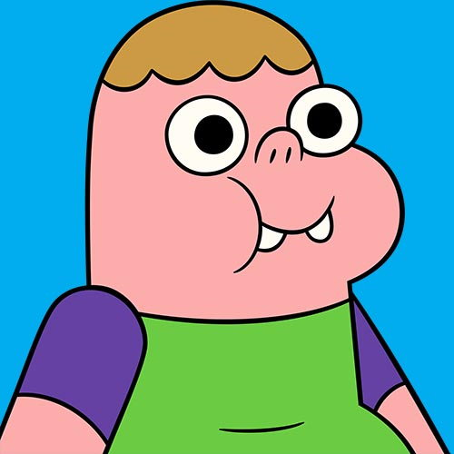
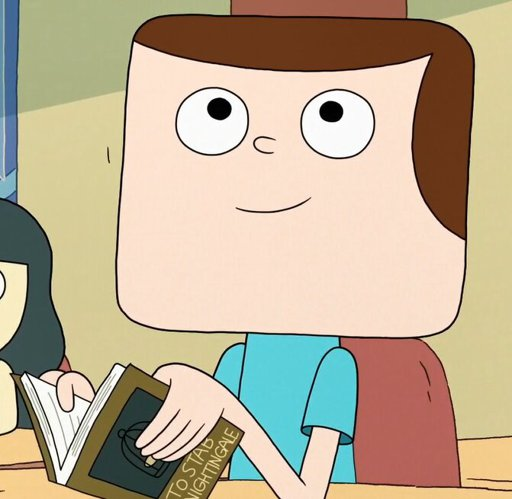
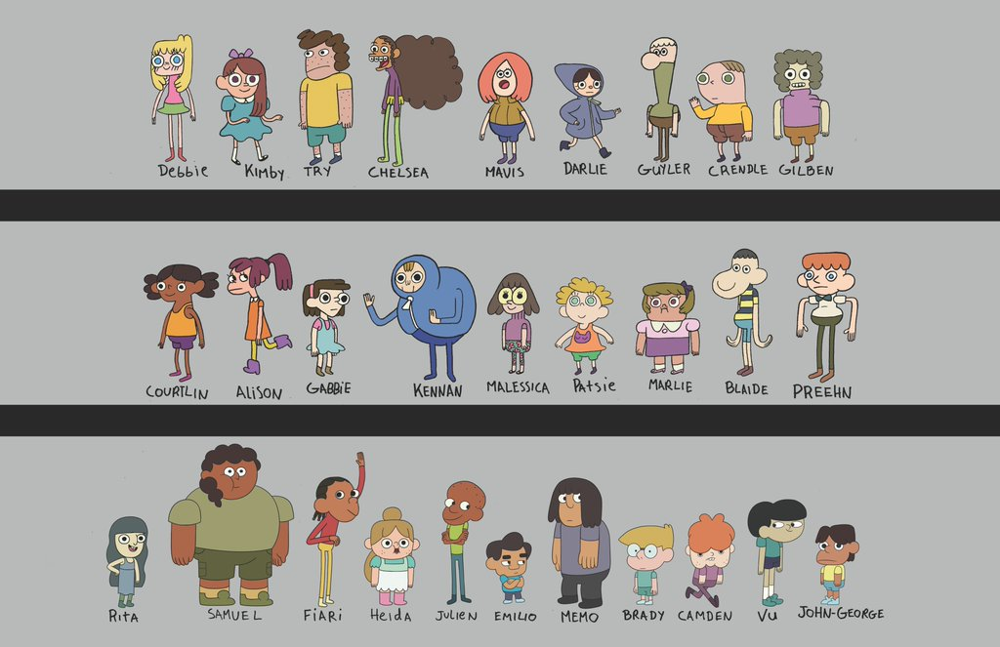

-
Clarence 
-
Sumo
-
Jeff 
-
Belson
-
Muchos mas! 
Comedia/Slice of life.
Clarence es una animacion, que sigue la vida del pre-adolescente Clarence y sus aventuras junto a sus amigos y su comunidad. Se lo recomiendo a quien quiera relajarse, gastarse unas risas, y recordar lo divertido de la vida. Tiene sus sorpresas, como episodios con mensajes profundos que recuerda lo humano.